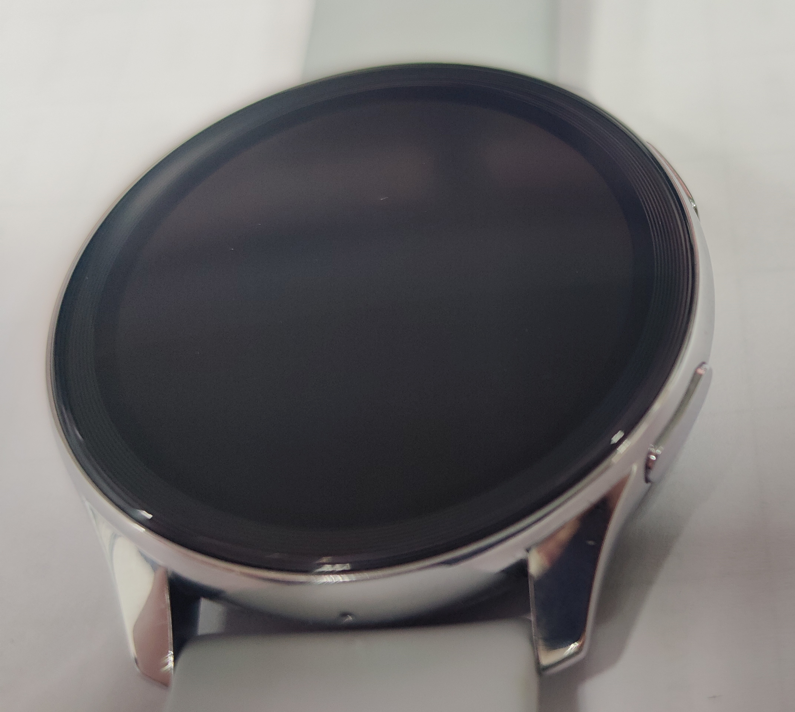

OnePlus Watch 体验报告
作为一个氧用户，也面临着“大氢亡了”的现状。但是呢，我还是毅然决然入了 OnePlus Watch，虽然是二手……
我收的是一个 “月银”的 OnePlus Watch，先说结论，从设计风格上说，总体非常好看，就是硅胶表带有点粘胳膊，体验上，RTOS下的系统流畅、待机时间长，但是功能受限，不能像安卓那样随便装软件。
外观
先看正面，嗯，普普通通的手表外观，不是全面屏。
反过来看，充电触电、心率和血氧传感器都在后面，中间的类似光盘的部分，我猜测是滤光片或者光栅之类的东西。
侧面按键时实体按键，手感，emmm，比 OnePlus 8 Pro 的音量键要脆一些，更偏向那种轻触开关的手感。

仔细观察屏幕，外面是有一圈圈的黑色的框线，感觉设计感还是很好的。喔，下面的小孔是麦克风收音口。

配件
虽然我买的是二手表，但是配件什么的一点都没缺。
看这盒子，经典的 “一加红”，大大的 “OnePlus Watch”。
打开盒子，配件是常规三件套“说明书”、“保修卡”和支持“WARP”协议的“磁吸充电座”。没啥特色。磁吸充电器也很紧，就像…那样（没错，我就是在开车）。
快充
采用 WARP 快充协议，充电速度确实快，从xx到xx花费了xx时间。
等我补充冲电图片和数据
链接 APP
能够链接 OnePlus Watch 的应用，理论上是有三个，多，但是这也是我想要吐槽的点。
这三个应用分别是 OnePlus Health (只有 Play Store 版本)、HeyTap Health (Play Store 版本) 和 欢太健康（或称“健康”，国内版本）。问题在于，OnePlus Health 有跟 OnePlus Watch 配对的选项，但是一直无法配对，添加设备；HeyTap Health 里面只有 OPPO 的 表 和 手环，还不能扫码，所以没法添加；只有 欢太健康 能够添加设备。
OnePlus Health 能够同步到 Google Health，不过，索性 欢太健康 没有广告，还能接受。
功能
在 欢太健康 中，能够对手表做各种个性化操作，但是 请不要对RTOS的手表有什么更多功能 。
- 切换表盘：官方提供了很多表盘，也可以自己传10张图片做表盘。
- 支付：支付功能有两种——支付宝的条形码支付和钱包的银行卡支付，后者只能NFC。
- 门禁：在支付的选项中，也可以添加门禁卡，但是只能添加非加密的门禁卡，像是学校一卡通这种加密卡，居然也可以！！！但是录入必须依赖手机
- 通知同步：可以自行选择通知的同步方式和同步的应用。而且因为手表的带有喇叭，所以也可以声音提醒。
- 电话功能：能够当蓝牙耳机一样，接听电话、QQ电话、WeChat电话和Telegram电话。
- 健康监测：健康监测，其实是我买表的初衷（可能是最近打呼噜多了，ptsd了
能够心率、血氧、睡眠还有各种运动监测，所以 很好的 ~ - 找手机功能，但是不能手机找手环。
- 安全：可以设置密码，那么手表脱落之后，没有密码就无法被别人使用。
总结
总之来说，我觉得 OnePlus Watch 和 OnePlus 是绝配，两个的简洁的设计是我的最爱，但是不得不承认，其确实有功能性的不足。嘛，满足我的要求了，看个时间，收个通知，监测一下健康。无他，很好了，如果你也有类似的需求，且能忍受简单的枯燥，那，OnePlus Watch或许也适合你！